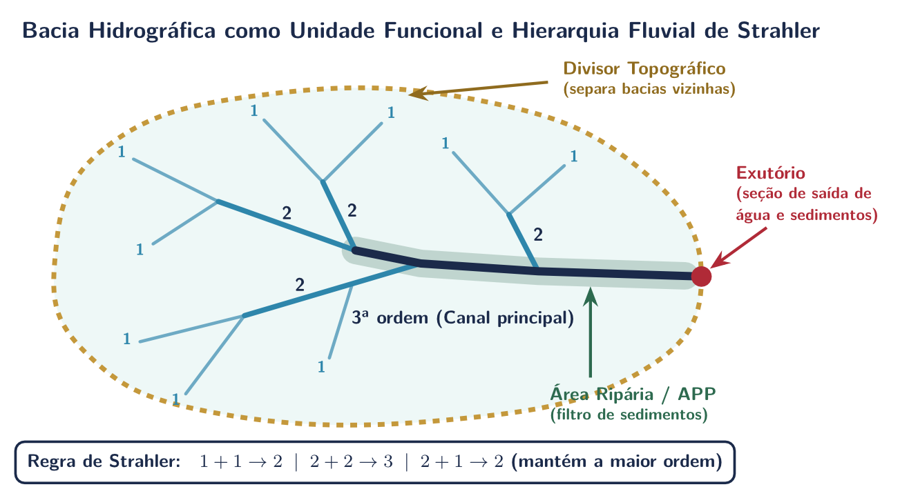
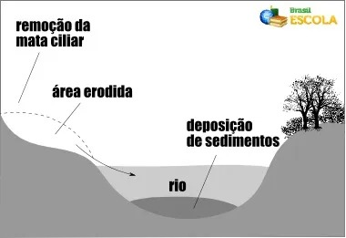
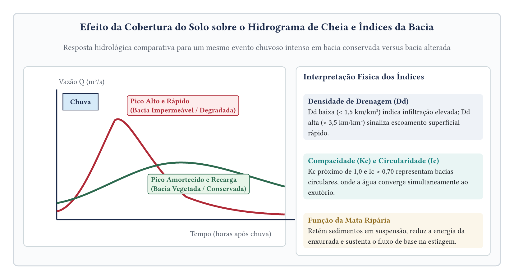

7 Bacia Hidrográfica como Unidade de Análise Ambiental Integrada
A bacia hidrográfica conecta áreas produtoras de escoamento e sedimentos a um ponto de saída. Sua morfometria descreve geometria e organização da drenagem, fornecendo elementos para interpretar a resposta do sistema às chuvas. Essa interpretação depende da combinação com solos, cobertura da terra e características dos eventos.
O capítulo desenvolve a delimitação funcional de bacias e microbacias, a Hierarquia Fluvial de Strahler, o cálculo e a interpretação de índices morfométricos (\(D_d\), \(K_c\), \(I_c\), \(H_m\) e \(R_r\)), o papel das áreas ripárias e a análise da conectividade hidrossedimentológica diante de mudanças no uso da terra.
A leitura utiliza os conceitos de sistema aberto, divisor, exutório, talvegue, área de drenagem, perímetro e escala cartográfica. Comprimento de canal, comprimento axial e extensão da vertente representam medidas distintas, exigindo conferência de unidades (\(1\text{ km} = 1.000\text{ m}\); \(1\text{ km}^2 = 100\text{ ha}\); \(1\text{ mm}\) sobre \(1\text{ m}^2 = 1\text{ L}\)).
Conceito Espacial e Funcional de Bacia e Microbacia Hidrográfica
Na Geografia Física e na Análise Ambiental, a bacia hidrográfica constitui uma unidade natural de drenagem delimitada pela topografia e dotada de limites físicos verificáveis em campo. Segundo Christofoletti (1981), trata-se de uma área drenada por um rio ou sistema fluvial que opera como sistema aberto, no qual a água precipitada converge das áreas elevadas (divisores topográficos ou interflúvios) para os fundos de vale (talvegues) sob ação da gravidade até deixar a unidade por uma única seção de saída, o exutório (seção de controle). Como a posição do exutório condiciona área (\(A\)), perímetro (\(P\)) e comprimento do canal principal (\(L_p\)), o registro de suas coordenadas geográficas e a conferência sobre o modelo digital de elevação garantem repetibilidade ao traçado.
Botelho e Silva (2004) destacam que a bacia hidrográfica opera como célula integradora da gestão ambiental porque articula as trocas entre atmosfera (chuva e evapotranspiração), litosfera e pedosfera (rochas, solos, infiltração e erosão), biosfera (cobertura vegetal e biota aquática) e antroposfera (cidades, estradas, agropecuária e reservatórios). Nessa perspectiva, Guerra e Cunha (1996) mostram que intervenções nas vertentes, como desmatamento, abertura de acessos rurais ou impermeabilização urbana, produzem reflexos diretos nos canais a jusante sob a forma de enxurradas, erosão marginal, assoreamento e queda na qualidade da água.
Bacia, Sub-bacia e Microbacia na Gestão Territorial
Na prática técnica e na Política Nacional de Recursos Hídricos (Lei nº 9.433/1997), organiza-se o espaço hídrico em três níveis encaixados. Na escala regional, a bacia hidrográfica abrange grandes sistemas de drenagem com milhares de quilômetros quadrados, como as bacias do Rio Paraguaçu e do Rio São Francisco, geridos por Comitês de Bacia Hidrográfica. Em escala intermediária, a sub-bacia corresponde à área de captação de um tributário principal dentro de uma bacia maior, a exemplo do Rio Jacuípe (afluente do Paraguaçu) ou do Rio Subaé, na região de Feira de Santana (BA). Na escala local e operacional, a microbacia reúne unidades de pequena extensão (de poucos hectares a dezenas de quilômetros quadrados, geralmente de 1ª a 3ª ordem de Strahler) com resposta imediata a chuvas convectivas e mudanças de uso da terra, sendo a unidade preferencial para conservação do solo, recuperação de nascentes e bioengenharia.
Cabe distinguir o divisor topográfico (superficial), que acompanha a linha de cumeada e governa a enxurrada, do divisor freático (subterrâneo), que acompanha o topo do lençol freático segundo o mergulho de camadas geológicas e fraturas da rocha. Em terrenos cristalinos rasos do Semiárido baiano, ambos os divisores tendem a coincidir de modo aproximado; já em bacias sedimentares ou áreas cársticas (como o Oeste Baiano ou setores da Chapada Diamantina), o fluxo subterrâneo pode cruzar o divisor superficial e alimentar bacias vizinhas.
Elementos Estruturais e Hierarquia Fluvial de Strahler
Os cursos d’água organizam-se em redes ramificadas das cabeceiras ao exutório. Para comparar bacias de tamanhos distintos e aferir o grau de dissecação do relevo, emprega-se a Hierarquia Fluvial de Strahler (1952), simplificação operacional da proposta de Horton (1945) difundida por Christofoletti (1981).
Regras da Hierarquia Fluvial de Strahler
A ordenação de Strahler avança sempre de montante (cabeceiras) para jusante (exutório) segundo três regras fixas. Todo canal sem tributários, desde a nascente até a primeira confluência, recebe classificação de 1ª ordem. Quando dois canais de mesma ordem se encontram (\(n + n \to n + 1\)), a hierarquia eleva-se em uma unidade, de modo que dois canais de 1ª ordem geram um segmento de 2ª ordem (\(1 + 1 \to 2\)) e dois de 2ª ordem formam um segmento de 3ª ordem (\(2 + 2 \to 3\)). Quando um canal de ordem inferior desemboca em um canal de ordem superior (\(n + m \to \max(n, m)\)), o canal receptor conserva a maior ordem (\(2 + 1 \to 2\); \(3 + 1 \to 3\); \(3 + 2 \to 3\)). Ao final do traçado, a ordem da bacia hidrográfica equivale à ordem do segmento principal no exutório.
O conjunto integrado de divisores, rede fluvial hierarquizada até a 3ª ordem, faixas ripárias (APPs) e seção de controle no exutório encontra-se representado na Figura 7.1.

Além da ordem numérica, a geometria em planta da rede, denominada padrão de drenagem, revela o controle litológico e estrutural do terreno. O padrão dendrítico (arborescente) assemelha-se a galhos de árvore e ocorre em rochas de resistência homogênea, como granitos pouco fraturados ou camadas sedimentares horizontais. O padrão retangular ou em treliça, com confluências próximas a \(90^\circ\), denuncia forte controle por falhas, fraturas ou dobramentos, sendo comum em setores serranos da Chapada Diamantina. Em encostas íngremes e uniformes desenvolve-se o padrão paralelo, com canais alongados, enquanto em morros isolados, domos ou depressões fechadas surge o padrão radial, divergente a partir do topo ou convergente para o centro da depressão.
O Exemplo 7.1 aplica passo a passo as três regras de Strahler a uma microbacia tributária do Rio Jacuípe.
Situação analisada. Durante o mapeamento hidrográfico de uma microbacia afluente do Rio Jacuípe (BA), uma equipe identificou de montante para jusante sete córregos sem tributários (\(C_1\) a \(C_7\)): \(C_1\) e \(C_2\) unem-se formando o trecho \(T_1\); \(C_3\) e \(C_4\) unem-se formando \(T_2\); \(C_5\) desemboca em \(T_2\), originando \(T_3\); \(T_1\) e \(T_3\) encontram-se formando \(T_4\); e \(C_6\) e \(C_7\) unem-se formando \(T_5\), que desemboca em \(T_4\) para gerar o canal principal \(T_6\) até o exutório.
Dados disponíveis. Sete canais de cabeceira sem tributários (\(C_1\) a \(C_7\)) e cinco confluências sequenciais até \(T_6\).
Problema a resolver. Determinar a ordem de Strahler de cada trecho (\(T_1\) a \(T_6\)) e a ordem final da microbacia.
Fundamento da análise. Aplicação sequencial das regras de Strahler (1952): nascentes \(= 1\); encontro \(n + n \to n + 1\); encontro \(n + m \to \max(n, m)\).
Desenvolvimento. Todos os sete canais sem afluentes (\(C_1\) a \(C_7\)) pertencem à 1ª ordem. Seguindo de montante para jusante, \(T_1\) resulta de \(C_1 + C_2\) (\(1 + 1 \to \text{2ª ordem}\)) e \(T_2\) resulta de \(C_3 + C_4\) (\(1 + 1 \to \text{2ª ordem}\)). Quando \(C_5\) (1ª) encontra \(T_2\) (2ª), prevalece a maior ordem em \(T_3\) (\(2 + 1 \to \text{2ª ordem}\)). Na junção entre \(T_1\) (2ª) e \(T_3\) (2ª), a ordem sobe para 3ª ordem em \(T_4\) (\(2 + 2 \to 3\)). Na confluência seguinte, \(T_5\) forma-se por \(C_6 + C_7\) (\(1 + 1 \to \text{2ª ordem}\)) e desemboca em \(T_4\) (3ª), mantendo \(T_6\) na 3ª ordem (\(3 + 2 \to 3\)).
Interpretação do resultado. \(T_1 = 2^{\text{a}}\), \(T_2 = 2^{\text{a}}\), \(T_3 = 2^{\text{a}}\), \(T_4 = 3^{\text{a}}\), \(T_5 = 2^{\text{a}}\) e \(T_6 = 3^{\text{a}}\) ordem, caracterizando uma microbacia de 3ª ordem.
Condições de validade. Para surgir uma bacia de 4ª ordem seriam necessários ao menos dois canais de 3ª ordem confluindo entre si (exigindo no mínimo oito canais de 1ª ordem pareados); com sete canais de cabeceira, a 3ª ordem é o máximo possível.
Na aplicação dessa ordenação em mapas, o equívoco mais frequente consiste em somar ordens desiguais na confluência.
Equívoco frequente. Assumir que toda confluência eleva a ordem fluvial, registrando que um canal de 2ª ordem ao receber um tributário de 1ª ordem passa a ser de 3ª ordem.
Correção técnica. Na regra de Strahler, a ordem só sobe quando confluem dois segmentos de mesma hierarquia (\(1+1 \to 2\); \(2+2 \to 3\)). No encontro de ordens distintas, o trecho a jusante preserva a maior ordem (\(2+1 \to 2\)).
Morfometria de Bacias Hidrográficas
A análise morfométrica traduz atributos geométricos, lineares, areais e hipsométricos da bacia em índices numéricos objetivos (Christofoletti, 1981; Villela; Mattos, 1975). Esses parâmetros permitem diagnosticar permeabilidade relativa do substrato, tempo de resposta às chuvas, suscetibilidade a enchentes e energia potencial para erosão.
Densidade de Drenagem (\(D_d\))
Proposta por Robert E. Horton (1945), a Densidade de Drenagem (\(D_d\)) expressa o comprimento médio de canais fluviais por unidade de área da bacia, refletindo o balanço entre permeabilidade de solos e rochas, declividade, cobertura vegetal e regime pluviométrico:
\[ D_d = \frac{L_t}{A} \]
Nessa equação, \(D_d\) é expressa em \(\text{km}/\text{km}^2\) (ou \(\text{km}^{-1}\)), \(L_t\) representa o somatório do comprimento de todos os cursos d’água mapeados (\(\text{km}\)) e \(A\) indica a área total de drenagem (\(\text{km}^2\)). Em uma microbacia de \(A = 25{,}0\text{ km}^2\) e \(L_t = 45{,}0\text{ km}\), obtém-se \(D_d = 45{,}0 / 25{,}0 = 1{,}80\text{ km}/\text{km}^2\), valor intermediário compatível com drenagem moderada.
Valores baixos (\(D_d < 0{,}5\text{ km}/\text{km}^2\)) ocorrem em substratos muito permeáveis (como arenitos profundos e Latossolos arenosos) com elevada infiltração, enquanto valores altos (\(D_d > 2{,}0\text{ km}/\text{km}^2\)) predominam em rochas cristalinas pouco permeáveis e solos rasos do Semiárido sob chuvas concentradas. Como o comprimento \(L_t\) depende da escala cartográfica e do limiar de área de contribuição adotado na extração automática em SIG, comparações entre bacias exigem redes vetorizadas na mesma escala e sob o mesmo critério. O Exemplo 7.2 ilustra esse contraste litológico em escala padronizada.
Situação analisada. Em um diagnóstico comparativo na Bahia, analisaram-se duas microbacias rurais de mesma área, mapeadas na escala \(1:25.000\): a Microbacia A, sobre embasamento cristalino (gnaisses) com solos rasos no Semiárido, e a Microbacia B, sobre bacia sedimentar arenosa com solos profundos e bem drenados.
Dados disponíveis. Microbacia A: \(A_A = 16{,}0\text{ km}^2\) e \(L_{tA} = 41{,}6\text{ km}\). Microbacia B: \(A_B = 16{,}0\text{ km}^2\) e \(L_{tB} = 12{,}8\text{ km}\).
Problema a resolver. Calcular a Densidade de Drenagem (\(D_d\)) de cada microbacia e explicar a relação entre os resultados, a permeabilidade do terreno e o escoamento superficial.
Fundamento da análise. Aplicação da equação de Horton (\(D_d = L_t / A\)) e razão comparativa \(D_{dA}/D_{dB}\).
Desenvolvimento. Calculando \(D_d\) para as duas microbacias e comparando os valores obtidos:
\[ \begin{aligned} D_{dA} &= \frac{41{,}6\text{ km}}{16{,}0\text{ km}^2} = 2{,}60\text{ km}/\text{km}^2 \\ D_{dB} &= \frac{12{,}8\text{ km}}{16{,}0\text{ km}^2} = 0{,}80\text{ km}/\text{km}^2 \\ \frac{D_{dA}}{D_{dB}} &= \frac{2{,}60}{0{,}80} = 3{,}25. \end{aligned} \]
Interpretação do resultado. \(D_{dA} = 2{,}60\text{ km}/\text{km}^2\) (drenagem alta) e \(D_{dB} = 0{,}80\text{ km}/\text{km}^2\) (drenagem regular a baixa), sendo a densidade da Microbacia A \(3{,}25\) vezes superior à da Microbacia B.
Condições de validade. Rochas cristalinas e solos rasos limitam a infiltração profunda e exigem uma rede mais densa de canais para escoar a enxurrada, ao passo que arenitos e solos profundos favorecem a recarga subterrânea. Como ambas usaram a escala \(1:25.000\), a comparação é válida.
Índices de Forma, Coeficiente de Compacidade (\(K_c\)) e Índice de Circularidade (\(I_c\))
A geometria em planta da bacia controla a simultaneidade de chegada das ondas de cheia ao exutório. Em bacias próximas de um círculo, tributários distribuídos ao redor percorrem distâncias semelhantes até a saída, concentrando os picos de vazão, ao passo que bacias alongadas escalonam os tempos de viagem e atenuam o pico máximo, resposta que também depende da distribuição da chuva e da capacidade dos canais.
O Coeficiente de Compacidade (\(K_c\), Índice de Gravelius) divide o perímetro real da bacia (\(P\)) pelo perímetro do círculo de mesma área (\(P_c = 2\sqrt{\pi A}\)), usando na prática hidrológica a constante \(0{,}28\) (aproximação de \(1/(2\sqrt{\pi}) \approx 0{,}2821\), que produz pequena diferença perto de \(1\)). Como nenhuma figura plana tem perímetro menor que o círculo de mesma área, tem-se sempre \(K_c \ge 1\). De modo inverso, o Índice de Circularidade (\(I_c\), Miller, 1953) divide a área real (\(A\)) pela área do círculo de mesmo perímetro (\(A_c = P^2 / (4\pi)\)), variando em \(0 < I_c \le 1\) com \(I_c \approx 1 / K_c^2\):
\[ \begin{aligned} K_c &= \frac{P}{2\sqrt{\pi A}} \approx 0{,}28 \cdot \frac{P}{\sqrt{A}}, \qquad K_c \ge 1 \\ I_c &= \frac{4\pi \cdot A}{P^2} \approx \frac{12{,}57 \cdot A}{P^2}, \qquad 0 < I_c \le 1 \end{aligned} \]
Em ambos os índices adimensionais, emprega-se \(A\) em \(\text{km}^2\) e \(P\) em \(\text{km}\) (ou \(A\) em \(\text{m}^2\) e \(P\) em \(\text{m}\)). Para a microbacia de \(A = 25{,}0\text{ km}^2\) e \(P = 24{,}0\text{ km}\), resultam \(K_c = 0{,}28 \cdot (24{,}0 / 5{,}0) = 1{,}34\) e \(I_c = (12{,}57 \times 25{,}0) / 576{,}0 \approx 0{,}55\), indicando contorno ovalado e suscetibilidade moderada a cheias. O Exemplo 7.3 aplica \(K_c\) e \(I_c\) à priorização de obras de macrodrenagem entre duas sub-bacias de mesma área.
Situação analisada. A prefeitura de um município baiano precisa priorizar obras de macrodrenagem entre duas sub-bacias periurbanas de mesma área (\(36{,}0\text{ km}^2\)): a Bacia X, mais arredondada, e a Bacia Y, estreita e alongada.
Dados disponíveis. Bacia X: \(A_X = 36{,}0\text{ km}^2\) e \(P_X = 24{,}0\text{ km}\). Bacia Y: \(A_Y = 36{,}0\text{ km}^2\) e \(P_Y = 36{,}0\text{ km}\).
Problema a resolver. Calcular \(K_c\) e \(I_c\) de ambas as bacias e indicar qual apresenta maior suscetibilidade natural a picos rápidos de cheia.
Fundamento da análise. Cálculo de \(K_c = 0{,}28 \cdot (P/\sqrt{A})\) e \(I_c = (12{,}57 \cdot A)/P^2\), com classificação pela Tabela 7.1.
Desenvolvimento. Como \(\sqrt{36{,}0} = 6{,}0\text{ km}\) em ambas as unidades, calculam-se os índices da Bacia X e da Bacia Y:
\[ \begin{aligned} K_{cX} &= 0{,}28 \cdot \frac{24{,}0}{6{,}0} = 1{,}12, & I_{cX} &= \frac{12{,}57 \times 36{,}0}{24{,}0^2} \approx 0{,}79 \\ K_{cY} &= 0{,}28 \cdot \frac{36{,}0}{6{,}0} = 1{,}68, & I_{cY} &= \frac{12{,}57 \times 36{,}0}{36{,}0^2} \approx 0{,}35. \end{aligned} \]
Interpretação do resultado. Bacia X: \(K_c = 1{,}12\) e \(I_c = 0{,}79\) (contorno tendendo a circular, alta suscetibilidade a enchentes). Bacia Y: \(K_c = 1{,}68\) e \(I_c = 0{,}35\) (contorno alongado, baixa suscetibilidade a picos concentrados). A Bacia X deve receber prioridade.
Condições de validade. Confere-se a consistência \(1 / K_{cX}^2 = 1 / 1{,}12^2 \approx 0{,}80 \approx I_{cX}\), respeitando \(K_c \ge 1\) e \(I_c \le 1\).
Como \(K_c\) e \(I_c\) variam em direções opostas à medida que a bacia se alonga, confundir o sentido de leitura de ambos é erro comum em provas.
Equívoco frequente. Afirmar que “quanto maior o \(K_c\), mais circular é a bacia e maior o risco de enchentes”, confundindo \(K_c\) com \(I_c\).
Correção técnica. Os dois índices variam em sentidos opostos. Quanto mais circular a bacia, menor é \(K_c\) (próximo de \(1{,}0\)) e maior é \(I_c\) (próximo de \(1{,}0\)). Em bacias alongadas, \(K_c\) cresce (\(> 1{,}50\)) e \(I_c\) diminui (\(< 0{,}45\)). Valores com \(K_c < 1\) ou \(I_c > 1\) indicam erro de medição ou de cálculo.
Índices de Relevo, Amplitude Altimétrica (\(H_m\)) e Relação de Relevo (\(R_r\))
A energia potencial disponível para acelerar o escoamento e mobilizar sedimentos depende do desnível vertical combinado ao comprimento da bacia. A Amplitude Altimétrica (\(H_m\)) mede a diferença entre a cota máxima no divisor (\(H_{\max}\), em \(\text{m}\)) e a cota mínima no exutório (\(H_{\min}\), em \(\text{m}\)), enquanto a Relação de Relevo (\(R_r\)), proposta por Stanley Schumm (1956), divide esse desnível pelo comprimento axial (\(L\)):
\[ \begin{aligned} H_m &= H_{\max} - H_{\min} \\ R_r &= \frac{H_m}{L} \end{aligned} \]
Expressa-se \(R_r\) em \(\text{m}/\text{km}\) (quando \(L\) está em \(\text{km}\)) ou de forma adimensional em \(\text{m}/\text{m}\) (convertendo \(L\) para metros). Na microbacia de referência com \(H_{\max} = 420\text{ m}\), \(H_{\min} = 220\text{ m}\) e \(L = 8{,}0\text{ km}\), tem-se \(H_m = 200\text{ m}\) e \(R_r = 25{,}0\text{ m}/\text{km}\) (\(0{,}025\text{ m}/\text{m}\) ou \(2{,}5\%\)). O Exemplo 7.4 compara duas cabeceiras baianas de mesmo comprimento axial e contrastante energia topográfica.
Situação analisada. Para avaliar o potencial energético de erosão e transporte de sedimentos, comparam-se duas microbacias de mesmo comprimento axial (\(L = 6{,}0\text{ km}\)): uma nas cabeceiras serranas da Chapada Diamantina e outra em setor aplainado do Planalto Sertanejo.
Dados disponíveis. Chapada Diamantina: \(H_{\max} = 960\text{ m}\), \(H_{\min} = 480\text{ m}\), \(L = 6{,}0\text{ km}\). Planalto Sertanejo: \(H_{\max} = 360\text{ m}\), \(H_{\min} = 240\text{ m}\), \(L = 6{,}0\text{ km}\).
Problema a resolver. Calcular \(H_m\) e \(R_r\) (em \(\text{m}/\text{km}\) e em \(\text{m}/\text{m}\)) para ambas as unidades e interpretar suas implicações geomorfológicas.
Fundamento da análise. Aplicação de \(H_m = H_{\max} - H_{\min}\) e \(R_r = H_m / L\), convertendo \(6{,}0\text{ km} = 6.000\text{ m}\) para a forma adimensional.
Desenvolvimento. Calculando amplitude e relação de relevo para a Chapada Diamantina (1) e para o Planalto Sertanejo (2):
\[ \begin{aligned} H_{m1} &= 960 - 480 = 480\text{ m}, & R_{r1} &= \frac{480}{6{,}0} = 80{,}0\text{ m}/\text{km} \quad \left(\frac{480}{6.000} = 0{,}080\text{ m}/\text{m}\right) \\ H_{m2} &= 360 - 240 = 120\text{ m}, & R_{r2} &= \frac{120}{6{,}0} = 20{,}0\text{ m}/\text{km} \quad \left(\frac{120}{6.000} = 0{,}020\text{ m}/\text{m}\right). \end{aligned} \]
Interpretação do resultado. Chapada Diamantina: \(H_m = 480\text{ m}\) e \(R_r = 80{,}0\text{ m}/\text{km}\) (\(0{,}080\text{ m}/\text{m}\)). Planalto Sertanejo: \(H_m = 120\text{ m}\) e \(R_r = 20{,}0\text{ m}/\text{km}\) (\(0{,}020\text{ m}/\text{m}\)). A microbacia serrana possui energia de relevo \(4\) vezes maior.
Condições de validade. O mesmo comprimento axial acomoda um desnível quatro vezes superior na Chapada, elevando a velocidade do escoamento, a competência para transportar material grosseiro e a suscetibilidade a ravinas caso haja supressão vegetal.
A compatibilidade de unidades no denominador de \(R_r\) exige atenção constante para evitar discrepâncias de mil vezes no resultado numérico.
Equívoco frequente. Dividir \(H_m = 200\text{ m}\) por \(L = 8\text{ km}\), obter \(25\) e registrar o valor como “\(25\text{ m/m}\)” ou “\(25\%\)”.
Correção técnica. Ao dividir metros por quilômetros, a unidade obrigatória é \(\text{m}/\text{km}\) (\(25\text{ m}/\text{km}\)). Para obter \(R_r\) adimensional (\(\text{m}/\text{m}\)) ou em porcentagem, converta \(L\) para metros antes da divisão: \(200\text{ m} / 8.000\text{ m} = 0{,}025\text{ m}/\text{m} = 2{,}5\%\).
Para apoiar a leitura comparativa desses parâmetros em diagnósticos ambientais, a Tabela 7.1 reúne as faixas de referência usuais, que devem ser sempre interpretadas em conjunto com litologia, solos, cobertura e regime pluviométrico.
| Índice | Faixa de Valores | Significado Hidrológico e Ambiental |
|---|---|---|
| Densidade de Drenagem (\(D_d\)) | \(< 0{,}5\text{ km}/\text{km}^2\) | Drenagem pobre; substrato muito permeável e alta infiltração. |
| Densidade de Drenagem (\(D_d\)) | \(0{,}5\text{ a } 2{,}0\text{ km}/\text{km}^2\) | Drenagem regular a média; equilíbrio intermediário. |
| Densidade de Drenagem (\(D_d\)) | \(> 2{,}0\text{ km}/\text{km}^2\) | Drenagem alta; substrato pouco permeável e maior dissecação. |
| Compacidade (\(K_c\)) | \(1{,}00\text{ a } 1{,}25\) | Contorno circular; alta propensão a picos rápidos de cheia. |
| Compacidade (\(K_c\)) | \(1{,}25\text{ a } 1{,}50\) | Contorno ovalado; propensão moderada a cheias. |
| Compacidade (\(K_c\)) | \(> 1{,}50\) | Contorno alongado; menor concentração simultânea de picos. |
| Circularidade (\(I_c\)) | \(> 0{,}51\) | Tendência circular; convergência rápida ao exutório. |
| Circularidade (\(I_c\)) | \(\le 0{,}51\) | Tendência alongada; escoamento distribuído no tempo. |
| Relação de Relevo (\(R_r\)) | \(< 15\text{ m}/\text{km}\) | Relevo suave; menor velocidade e tendência à deposição. |
| Relação de Relevo (\(R_r\)) | \(> 40\text{ m}/\text{km}\) | Relevo acidentado; alta energia erosiva e de transporte. |
Áreas Ripárias, Conectividade Hidrossedimentológica e Uso da Terra
Os índices morfométricos descrevem a arquitetura física de evolução lenta da bacia, mas a resposta hidrológica real depende criticamente da cobertura vegetal nas vertentes e nas margens fluviais.
Áreas Ripárias e Zonas Tampão
As áreas ripárias (matas ciliares, galerias e várzeas marginais, protegidas como Áreas de Preservação Permanente pelo Código Florestal, Lei nº 12.651/2012) constituem a interface entre a vertente e o canal fluvial. Quando a enxurrada desce a encosta e atravessa uma faixa ripária conservada, a serapilheira e os caules aumentam a rugosidade superficial, dissipam a energia cinética do fluxo e retêm sedimentos e agroquímicos antes que atinjam o rio. Simultaneamente, o entrelaçamento das raízes eleva a resistência ao cisalhamento dos barrancos e contém o solapamento das margens, enquanto o sombreamento regula a temperatura da água e os solos porosos mantêm a recarga que sustenta o fluxo de base nas estiagens.
Quando a vegetação ciliar é suprimida em uma das margens ou em ambas, perde-se essa zona tampão filtrante e estabilizadora: o solo exposto sofre desagregação rápida e os sedimentos carreados depositam-se no leito fluvial, reduzindo a profundidade da calha e ampliando o assoreamento (Figura 7.2).

Conectividade Hidrossedimentológica
Na geomorfologia fluvial, denomina-se conectividade hidrossedimentológica a eficiência com que água e sedimentos mobilizados nas vertentes alcançam a rede de canais e o exutório (Brierley; Fryirs, 2005). A conectividade estrutural diz respeito à continuidade física dos caminhos de fluxo no relevo (declividade, ravinas, estradas rurais mal drenadas ou galerias pluviais), enquanto a conectividade funcional expressa a ativação efetiva desses caminhos durante eventos chuvosos, como ocorre em canais efêmeros do Semiárido que permanecem secos na maior parte do ano e conectam-se apenas quando chuvas convectivas superam a infiltração do solo. Faixas ciliares conservadas, terraços em nível e paliçadas operam como desconectores, ao passo que estradas morro abaixo atuam como conectores artificiais.
Impactos da Mudança de Uso da Terra, Impermeabilização e Desmatamento
A conversão de florestas ou Caatinga conservada em pastagens compactadas ou loteamentos urbanos impermeabilizados altera profundamente o balanço hídrico da microbacia. A perda de dossel e a selagem por asfalto, telhados e solos adensados derrubam a interceptação e a infiltração, elevando o coeficiente de escoamento superficial (\(C\)) de valores típicos entre \(0{,}10\) e \(0{,}20\) em coberturas florestais para \(0{,}65\) a \(0{,}90\) em áreas urbanas densas.
Como resultado, a água escoa mais rápido pela superfície, reduz o tempo de concentração e gera hidrogramas com picos de cheia mais elevados e precoces sob a mesma chuva (cenário recorrente em microbacias urbanizadas de Feira de Santana, como nas cabeceiras do Subaé e do Jacuípe), enquanto a redução da infiltração diminui a recarga dos aquíferos e deprime o fluxo de base na estiagem, dinâmica contrastada com a leitura física de \(D_d\), \(K_c\) e \(I_c\) na Figura 7.3.

Síntese Aplicada em Hidrologia de Microbacias
A comparação gráfica dos hidrogramas na Figura 7.3 traduz-se diretamente em volumes escoados durante uma tormenta. Multiplicar a lâmina precipitada pela área da microbacia e pelo coeficiente de escoamento superficial (\(C\)) permite quantificar o incremento de enxurrada gerado pela urbanização sem drenagem sustentável, como desenvolvido no Exemplo 7.5.
Situação analisada. Uma microbacia periurbana de \(4{,}0\text{ km}^2\) na borda de expansão de Feira de Santana era originalmente coberta por vegetação nativa e áreas ripárias conservadas, com coeficiente médio de escoamento superficial \(C_1 = 0{,}15\). Após loteamentos pavimentados, canalização de córregos e supressão da mata ciliar, o coeficiente subiu para \(C_2 = 0{,}75\). Considere uma chuva intensa de \(P_{\text{chuva}} = 60\text{ mm}\).
Dados disponíveis. \(A = 4{,}0\text{ km}^2 = 4.000.000\text{ m}^2\); \(P_{\text{chuva}} = 60\text{ mm} = 0{,}060\text{ m}\); \(C_1 = 0{,}15\); \(C_2 = 0{,}75\).
Problema a resolver. Calcular o volume total precipitado, o volume de escoamento superficial antes e depois da urbanização, a diferença absoluta e relativa e os reflexos sobre a conectividade hidrossedimentológica.
Fundamento da análise. Cálculo volumétrico do balanço superficial (\(V_{\text{prec}} = P_{\text{chuva}} \cdot A\) e \(V_{\text{esc}} = C \cdot V_{\text{prec}}\)), seguido de análise hidrossedimentológica.
Desenvolvimento. Convertendo \(A = 4.000.000\text{ m}^2\) e \(P_{\text{chuva}} = 0{,}060\text{ m}\), obtêm-se os volumes precipitado, escoados e o incremento relativo:
\[ \begin{aligned} V_{\text{prec}} &= 0{,}060\text{ m} \times 4.000.000\text{ m}^2 = 240.000\text{ m}^3 \\ V_{\text{esc},1} &= 0{,}15 \times 240.000\text{ m}^3 = 36.000\text{ m}^3 \\ V_{\text{esc},2} &= 0{,}75 \times 240.000\text{ m}^3 = 180.000\text{ m}^3 \\ \Delta V_{\text{esc}} &= 180.000 - 36.000 = 144.000\text{ m}^3 \qquad \left(\frac{180.000}{36.000} = 5\text{ vezes, ou }+400\%\right). \end{aligned} \]
No cenário conservado, os \(204.000\text{ m}^3\) restantes (\(85\%\)) permaneciam retidos por interceptação, depressões e infiltração.
Interpretação do resultado. O escoamento superficial saltou de \(36.000\text{ m}^3\) para \(180.000\text{ m}^3\), um acréscimo de \(144.000\text{ m}^3\) (cinco vezes o volume original) para a mesma chuva de \(60\text{ mm}\).
Condições de validade. Esse acréscimo equivale a cerca de \(58\) piscinas olímpicas (\(2.500\text{ m}^3\) cada) lançadas abruptamente no canal em poucas horas. A supressão da mata ciliar e a canalização eliminam os desconectores naturais, amplificam a conectividade artificial e provocam alagamentos a jusante, erosão marginal e queda na recarga subterrânea.
Armadilha Conceitual e Materiais Audiovisuais de Apoio
Mesmo quando os índices morfométricos são calculados corretamente nas fórmulas de Horton, Gravelius e Miller, comparar bacias vetorizadas em escalas cartográficas incompatíveis invalida qualquer conclusão sobre permeabilidade e dissecação.
Equívoco frequente. Calcular \(D_d\) de uma bacia sobre base \(1:10.000\) e compará-la com o \(D_d\) de outra bacia extraído de carta \(1:100.000\), concluindo que a primeira apresenta substrato muito menos permeável.
Correção técnica. Cartas de pequena escala (\(1:100.000\)) generalizam a rede hidrográfica e omitem grande parte dos canais de 1ª ordem, subestimando \(L_t\) e \(D_d\). Comparações morfométricas válidas exigem vetorização na mesma escala e sob o mesmo critério de extração de canais.
Para aprofundar a compreensão da bacia hidrográfica como unidade de gestão e dos processos erosivos em rede de drenagem, assista às videoaulas selecionadas na página da disciplina. O vídeo Gestão de Recursos Hídricos aborda a bacia hidrográfica na análise ambiental integrada e na Lei das Águas, enquanto o vídeo Processos Erosivos e Relevo discute a dinâmica de escoamento e morfogênese nas vertentes e canais.
Exercícios de fixação
Nível Básico (Exercícios 1 a 5)
Explique, com base em Botelho e Silva (2004) e Christofoletti (1981), por que a bacia hidrográfica é considerada a unidade espacial mais adequada para a análise e o planejamento ambiental, diferenciando divisor topográfico, talvegue e exutório.
Uma microbacia rural apresenta área de drenagem \(A = 20{,}0\text{ km}^2\) e comprimento total de canais \(L_t = 35{,}0\text{ km}\). Calcule sua Densidade de Drenagem (\(D_d\)) e classifique-a conforme a Tabela 7.1.
Calcule o Coeficiente de Compacidade (\(K_c\)) de uma sub-bacia com área \(A = 49{,}0\text{ km}^2\) e perímetro \(P = 35{,}0\text{ km}\). Indique se sua forma tende à circular, ovalada ou alongada.
Uma microbacia possui área \(A = 25{,}0\text{ km}^2\) e perímetro \(P = 25{,}0\text{ km}\). Calcule seu Índice de Circularidade (\(I_c\)) e avalie sua propensão natural a picos concentrados de enchente.
Determine a Amplitude Altimétrica (\(H_m\)) e a Relação de Relevo (\(R_r\)), em \(\text{m}/\text{km}\) e em \(\text{m}/\text{m}\), para uma bacia com \(H_{\max} = 640\text{ m}\), \(H_{\min} = 280\text{ m}\) e comprimento axial \(L = 9{,}0\text{ km}\).
Nível Intermediário (Exercícios 6 a 10)
Compare duas bacias hidrográficas mapeadas na mesma escala (\(1:25.000\)), ambas com área \(A = 64{,}0\text{ km}^2\):
Bacia M1: \(P = 32{,}0\text{ km}\), \(L_t = 160{,}0\text{ km}\), \(H_{\max} = 540\text{ m}\), \(H_{\min} = 220\text{ m}\), \(L = 8{,}0\text{ km}\).
Bacia M2: \(P = 48{,}0\text{ km}\), \(L_t = 51{,}2\text{ km}\), \(H_{\max} = 380\text{ m}\), \(H_{\min} = 220\text{ m}\), \(L = 16{,}0\text{ km}\).
Calcule \(D_d\), \(K_c\), \(I_c\), \(H_m\) e \(R_r\) para ambas e justifique qual delas exige maior cuidado contra cheias rápidas e processos erosivos.
Em uma rede hidrográfica hipotética, quatro pares de canais de 1ª ordem formam quatro canais de 2ª ordem (\(A, B, C, D\)). Os canais \(A\) e \(B\) se unem formando o trecho \(X\); o canal \(C\) desemboca em \(X\) formando o trecho \(Y\); e o canal \(D\) desemboca em \(Y\) formando o canal final \(Z\) no exutório. Determine a ordem de Strahler de \(X\), \(Y\) e \(Z\) e explique por que a ordem final não chegou a 4ª ordem.
Uma microbacia de \(5{,}0\text{ km}^2\) sofreu desmatamento e abertura de estradas compactadas, elevando seu coeficiente de escoamento superficial de \(C_1 = 0{,}20\) para \(C_2 = 0{,}70\). Para uma chuva de \(50\text{ mm}\), calcule o volume escoado superficialmente (em \(\text{m}^3\)) nos dois cenários e o percentual de aumento do escoamento.
Explique a diferença entre conectividade estrutural e conectividade funcional em uma bacia hidrográfica do Semiárido baiano e dê um exemplo de elemento que atua como conector e outro que atua como desconector de sedimentos.
Por que a supressão de matas ciliares (áreas ripárias) em microbacias rurais provoca simultaneamente aumento da turbidez da água, assoreamento de reservatórios e instabilidade de margens?
Questões Objetivas (Exercícios 11 a 15)
Na Hierarquia Fluvial de Strahler, quando um curso d’água de 3ª ordem recebe um afluente de 2ª ordem e, mais a jusante, conflui com outro curso d’água de 3ª ordem, as ordens dos segmentos imediatamente após a primeira e a segunda confluência serão, respectivamente:
4ª ordem e 5ª ordem.
3ª ordem e 4ª ordem.
3ª ordem e 3ª ordem.
5ª ordem e 6ª ordem.
2ª ordem e 4ª ordem.
Uma bacia hidrográfica apresenta \(A = 100{,}0\text{ km}^2\), \(P = 50{,}0\text{ km}\), \(L_t = 220{,}0\text{ km}\), \(H_{\max} = 750\text{ m}\), \(H_{\min} = 250\text{ m}\) e \(L = 20{,}0\text{ km}\). Os valores corretos de \(D_d\), \(K_c\) e \(R_r\) (em \(\text{m}/\text{km}\)) são, respectivamente:
\(2{,}20\text{ km}/\text{km}^2\); \(1{,}40\); \(25{,}0\text{ m}/\text{km}\).
\(0{,}45\text{ km}/\text{km}^2\); \(1{,}40\); \(25{,}0\text{ m}/\text{km}\).
\(2{,}20\text{ km}/\text{km}^2\); \(0{,}71\); \(50{,}0\text{ m}/\text{km}\).
\(2{,}20\text{ km}/\text{km}^2\); \(1{,}40\); \(0{,}25\text{ m}/\text{km}\).
\(4{,}40\text{ km}/\text{km}^2\); \(2{,}80\); \(25{,}0\text{ m}/\text{km}\).
Sobre o Coeficiente de Compacidade (\(K_c\)) e o Índice de Circularidade (\(I_c\)), assinale a alternativa tecnicamente correta:
Uma bacia perfeitamente circular apresenta \(K_c = 0\) e \(I_c = 1\).
Quanto maior o valor de \(K_c\), maior a tendência da bacia à forma circular e maior o risco de cheias súbitas.
Valores de \(K_c\) próximos de \(1{,}0\) e de \(I_c\) próximos de \(1{,}0\) indicam bacia mais circular e maior suscetibilidade a picos concentrados de enchente.
O valor de \(I_c\) pode assumir qualquer número real positivo superior a \(1{,}0\) em bacias muito alongadas.
Os índices \(K_c\) e \(I_c\) dependem exclusivamente da altitude máxima e da extensão dos rios, independendo do perímetro.
Em relação às áreas ripárias em bacias hidrográficas, é INCORRETO afirmar que:
Atuam como zonas tampão que retêm parte dos sedimentos e nutrientes carreados das vertentes.
Contribuem para a estabilização das margens fluviais por meio do sistema radicular da vegetação.
Aumentam a rugosidade superficial, reduzindo a velocidade do escoamento que alcança o canal.
Sua remoção eleva a conectividade hidrossedimentológica entre encostas agrícolas e o leito fluvial.
Sua supressão aumenta a recarga dos aquíferos locais ao eliminar o consumo de água por evapotranspiração.
A urbanização intensa e sem drenagem sustentável em uma microbacia provoca, no hidrograma de cheia medido no exutório:
Aumento do tempo de concentração e diminuição do pico de vazão.
Redução do volume escoado superficialmente e elevação do fluxo de base na estiagem.
Redução do tempo de concentração e aumento acentuado da vazão de pico.
Manutenção inalterada da curva de cheia, pois a área da bacia permanece constante.
Eliminação da conectividade estrutural entre vertentes e canais.
Questões de aplicação
(Questão autoral, estilo ENADE / Licenciatura e Bacharelado em Geografia) Um órgão estadual de meio ambiente avalia o pedido de supressão vegetal para expansão agropecuária em uma microbacia de cabeceira situada sobre embasamento cristalino no Nordeste brasileiro. O relatório técnico apresentou \(D_d = 2{,}85\text{ km}/\text{km}^2\), \(K_c = 1{,}14\) e \(R_r = 55\text{ m}/\text{km}\). Com base na interpretação integrada desses indicadores morfométricos, conclui-se que a microbacia apresenta:
Substrato muito permeável, forma alongada e relevo plano, com baixíssima vulnerabilidade à erosão hídrica.
Elevada capacidade de infiltração profunda e lenta resposta hidrológica, dispensando faixas ripárias protetoras.
Baixa permeabilidade relativa, forma tendente à circular e elevada energia de relevo, indicando alta propensão natural a enxurradas rápidas e processos erosivos caso a vegetação seja suprimida.
Predomínio de deposição sedimentar em planície aluvial ampla, pois \(K_c\) próximo de \(1{,}0\) impede a concentração do escoamento no exutório.
Incompatibilidade matemática nos dados, visto que uma bacia com \(D_d > 2{,}0\) não pode apresentar \(K_c > 1{,}0\).
(Questão autoral, estilo Concurso Analista Ambiental / INEMA-BA) Em um estudo hidrológico para outorga e prevenção de inundações, uma sub-bacia foi caracterizada por \(A = 81{,}0\text{ km}^2\), \(P = 36{,}0\text{ km}\), \(L_t = 202{,}5\text{ km}\), \(H_{\max} = 680\text{ m}\), \(H_{\min} = 230\text{ m}\) e \(L = 15{,}0\text{ km}\). Assinale a alternativa que apresenta corretamente os valores de \(D_d\), \(K_c\), \(I_c\) e \(R_r\) (em \(\text{m}/\text{m}\)) dessa sub-bacia:
\(D_d = 2{,}50\text{ km}/\text{km}^2\); \(K_c = 1{,}12\); \(I_c = 0{,}79\); \(R_r = 0{,}030\text{ m}/\text{m}\).
\(D_d = 2{,}50\text{ km}/\text{km}^2\); \(K_c = 1{,}12\); \(I_c = 0{,}79\); \(R_r = 30{,}0\text{ m}/\text{m}\).
\(D_d = 0{,}40\text{ km}/\text{km}^2\); \(K_c = 1{,}12\); \(I_c = 0{,}79\); \(R_r = 0{,}030\text{ m}/\text{m}\).
\(D_d = 2{,}50\text{ km}/\text{km}^2\); \(K_c = 1{,}40\); \(I_c = 0{,}50\); \(R_r = 0{,}030\text{ m}/\text{m}\).
\(D_d = 2{,}50\text{ km}/\text{km}^2\); \(K_c = 0{,}89\); \(I_c = 1{,}26\); \(R_r = 0{,}030\text{ m}/\text{m}\).
(Questão autoral, estilo Concurso IBAMA / Gestão de Bacias Hidrográficas) Sobre o conceito de conectividade hidrossedimentológica aplicado à gestão de bacias hidrográficas, analise as afirmativas abaixo:
Estradas vicinais não pavimentadas construídas no sentido da declividade atuam como conectores estruturais, canalizando o escoamento das vertentes diretamente para os cursos d’água.
A recomposição de matas ciliares e a implantação de barreiras de retenção de sedimentos reduzem a conectividade entre áreas degradadas e o canal principal.
Em climas semiáridos, canais efêmeros podem exibir alta conectividade estrutural em mapa, mas conectividade funcional intermitente, ativada apenas em eventos pluviométricos que superam a capacidade de infiltração.
Está correto o que se afirma em:
I, apenas.
II, apenas.
I e II, apenas.
II e III, apenas.
I, II e III.
Conexão com a Avaliação Teórica e com o Trabalho Prático Final
Na Prova Teórica da Semana 10, os índices morfométricos exigem calcular (\(D_d\), \(K_c\), \(I_c\) e \(R_r\)) e interpretar o comportamento físico de cada valor. No Trabalho Prático Final, extrair esses cinco índices em SIG (QGIS) para a microbacia escolhida, documentando a escala e o critério de extração da rede, confere precisão técnica à caracterização da área de estudo.
Gabarito comentado
Resoluções e Justificativas, Capítulo 7
Conceito e elementos. A bacia hidrográfica é uma unidade espacial natural e sistêmica na qual todos os fluxos de água, sedimentos e poluentes das vertentes convergem para um único exutório, permitindo relacionar diretamente o uso da terra ao estado dos recursos hídricos (Botelho; Silva, 2004; Christofoletti, 1981). O divisor topográfico corresponde à linha de pontos mais altos que separa bacias adjacentes; o talvegue une os pontos mais baixos ao longo do vale onde se aloja o canal; e o exutório marca o ponto de menor cota do contorno por onde sai toda a drenagem superficial.
Cálculo de \(D_d\). \(D_d = L_t / A = 35{,}0 / 20{,}0 = \mathbf{1{,}75\text{ km}/\text{km}^2}\), indicando drenagem regular a média (\(0{,}5\) a \(2{,}0\text{ km}/\text{km}^2\)).
Cálculo de \(K_c\). Como \(\sqrt{49{,}0} = 7{,}0\text{ km}\), tem-se \(K_c = 0{,}28 \cdot (35{,}0 / 7{,}0) = 0{,}28 \cdot 5{,}0 = \mathbf{1{,}40}\), indicando forma ovalada (\(1{,}25\) a \(1{,}50\)) e suscetibilidade moderada a cheias.
Cálculo de \(I_c\). \(I_c = \frac{12{,}57 \cdot 25{,}0}{(25{,}0)^2} = \frac{12{,}57}{25{,}0} = \mathbf{0{,}5028 \approx 0{,}50}\). Situado no limiar de \(0{,}51\), indica forma intermediária com propensão moderada a cheias concentradas.
Cálculo de \(H_m\) e \(R_r\). \(H_m = 640 - 280 = \mathbf{360\text{ m}}\). Em \(\text{m}/\text{km}\), \(R_r = 360 / 9{,}0 = \mathbf{40{,}0\text{ m}/\text{km}}\). Convertendo \(L = 9.000\text{ m}\), obtém-se \(R_r = 360 / 9.000 = \mathbf{0{,}040\text{ m}/\text{m}}\) (\(4{,}0\%\)).
Comparação M1 vs. M2. Como \(\sqrt{64{,}0} = 8{,}0\text{ km}\), obtém-se para M1 \(D_d = \mathbf{2{,}50\text{ km}/\text{km}^2}\), \(K_c = \mathbf{1{,}12}\), \(I_c = \mathbf{0{,}79}\), \(H_m = \mathbf{320\text{ m}}\) e \(R_r = \mathbf{40{,}0\text{ m}/\text{km}}\) (\(0{,}040\text{ m}/\text{m}\)); e para M2 \(D_d = \mathbf{0{,}80\text{ km}/\text{km}^2}\), \(K_c = \mathbf{1{,}68}\), \(I_c = \mathbf{0{,}35}\), \(H_m = \mathbf{160\text{ m}}\) e \(R_r = \mathbf{10{,}0\text{ m}/\text{km}}\) (\(0{,}010\text{ m}/\text{m}\)). A Bacia M1 exige maior cuidado contra cheias rápidas e erosão por combinar alta densidade de drenagem (\(2{,}50\)), contorno tendente ao circular (\(K_c = 1{,}12\); \(I_c = 0{,}79\)) e energia de relevo quatro vezes superior (\(40{,}0\) contra \(10{,}0\text{ m}/\text{km}\)).
Hierarquia de Strahler. \(A\) (2ª) \(+ B\) (2ª) \(\to X\) (3ª ordem); \(X\) (3ª) \(+ C\) (2ª) \(\to Y\) (3ª ordem); e \(Y\) (3ª) \(+ D\) (2ª) \(\to Z\) (3ª ordem). A bacia permaneceu na 3ª ordem porque \(C\) e \(D\) desembocaram separadamente no canal de 3ª ordem; para surgir uma 4ª ordem, \(C\) e \(D\) precisariam ter confluído entre si formando um segundo canal de 3ª ordem antes de encontrar \(X\).
Balanço do escoamento. Com \(A = 5.000.000\text{ m}^2\) e \(P_{\text{chuva}} = 0{,}050\text{ m}\), o volume precipitado é \(V_{\text{prec}} = 250.000\text{ m}^3\). Antes (\(C_1 = 0{,}20\)), \(V_1 = \mathbf{50.000\text{ m}^3}\); depois (\(C_2 = 0{,}70\)), \(V_2 = \mathbf{175.000\text{ m}^3}\), gerando aumento absoluto de \(125.000\text{ m}^3\) e elevação de \(\mathbf{+250\%}\) (\(3{,}5\) vezes o volume inicial).
Conectividade. A estrutural refere-se à continuidade física dos caminhos de fluxo no terreno (declividade, ravinas e drenagem), enquanto a funcional depende da ativação desses fluxos pela chuva. Como exemplo de conector, cita-se uma estrada rural sem caixas secas ligada diretamente ao córrego; como exemplo de desconector, uma faixa de mata ciliar conservada ou paliçada permeável retentora de sedimentos.
Remoção de áreas ripárias. Sem a cobertura vegetal marginal, o solo das vertentes não é filtrado antes de alcançar o rio (elevando turbidez e sedimentos em suspensão), o excesso de carga sólida deposita-se no leito e em reservatórios (assoreamento) e a perda das raízes reduz a coesão dos barrancos, acelerando o desmoronamento e solapamento das margens.
Gabarito (B). Primeiro encontro: \(3 + 2 \to 3^{\text{a}}\) ordem (mantém a maior). Segundo encontro: \(3 + 3 \to 4^{\text{a}}\) ordem (ordens iguais somam \(+1\)).
Gabarito (A). \(D_d = 220{,}0 / 100{,}0 = 2{,}20\text{ km}/\text{km}^2\); \(K_c = 0{,}28 \cdot (50{,}0 / \sqrt{100{,}0}) = 1{,}40\); \(H_m = 750 - 250 = 500\text{ m} \Rightarrow R_r = 500 / 20{,}0 = 25{,}0\text{ m}/\text{km}\).
Gabarito (C). O círculo perfeito tem \(K_c = 1{,}0\) e \(I_c = 1{,}0\); bacias próximas desses valores concentram o escoamento mais rapidamente no exutório. (A) erra ao colocar \(K_c = 0\); (B) inverte o significado de \(K_c\); (D) viola o limite \(I_c \le 1\); (E) ignora o papel central do perímetro \(P\).
Gabarito (E). A afirmação (E) é incorreta porque a supressão de áreas ripárias promove compactação, selamento superficial e aceleração do escoamento, reduzindo a infiltração e a recarga dos aquíferos locais, o que prejudica a vazão de estiagem.
Gabarito (C). A impermeabilização acelera o escoamento superficial (menor tempo de concentração) e amplia o volume que chega rapidamente ao canal (maior vazão de pico).
Gabarito (C). \(D_d = 2{,}85\text{ km}/\text{km}^2\) é alto (substrato pouco permeável/cristalino), \(K_c = 1{,}14\) indica forma tendente à circular (alta propensão a cheias rápidas) e \(R_r = 55\text{ m}/\text{km}\) revela elevada energia de relevo e potencial erosivo.
Gabarito (A). Contas passo a passo: \(D_d = 202{,}5 / 81{,}0 = 2{,}50\text{ km}/\text{km}^2\); \(\sqrt{81{,}0} = 9{,}0 \Rightarrow K_c = 0{,}28 \cdot (36{,}0 / 9{,}0) = 1{,}12\); \(I_c = 12{,}57 \cdot 81{,}0 / 36{,}0^2 \approx 0{,}79\); \(H_m = 680 - 230 = 450\text{ m}\) e \(L = 15.000\text{ m} \Rightarrow R_r = 450 / 15.000 = 0{,}030\text{ m}/\text{m}\). Note que (B) erra a unidade de \(R_r\) (\(30{,}0\) seria em \(\text{m}/\text{km}\), usando metros apenas no numerador).
Gabarito (E). Todas as três proposições descrevem corretamente a dinâmica da conectividade estrutural e funcional em bacias hidrográficas, inclusive no contexto intermitente do Semiárido.
Síntese conceitual
A bacia hidrográfica opera como sistema aberto delimitado por divisores topográficos que drena água e sedimentos até um único exutório. Na Hierarquia Fluvial de Strahler, \(n + n \to n + 1\) e \(n + m \to \max(n, m)\), sendo a ordem da bacia igual à do canal principal no exutório. O formulário morfométrico principal reúne:
\[ \begin{aligned} D_d &= \frac{L_t}{A} \quad (\text{km}/\text{km}^2), & K_c &= 0{,}28 \cdot \frac{P}{\sqrt{A}} \ge 1, & I_c &= \frac{12{,}57 \cdot A}{P^2} \le 1 \\ H_m &= H_{\max} - H_{\min} \quad (\text{m}), & R_r &= \frac{H_m}{L} \quad (\text{m}/\text{km ou m}/\text{m}) & & \end{aligned} \]
Áreas ripárias atuam como desconectores de sedimentos e estabilizadores de margens, ao passo que desmatamento e impermeabilização elevam o coeficiente de escoamento (\(C\)), encurtam o tempo de concentração e amplificam cheias e processos erosivos.
Autoavaliação
Responda rapidamente (Verdadeiro [V] ou Falso [F]) sem consultar o texto e confira ao final:
( ) Na Hierarquia de Strahler, o encontro de um canal de 3ª ordem com um canal de 1ª ordem produz um segmento de 4ª ordem.
( ) Entre duas bacias de mesma área, aquela com menor valor de \(K_c\) (mais próximo de \(1{,}0\)) e maior valor de \(I_c\) possui contorno mais circular e maior suscetibilidade a picos concentrados de cheia.
( ) Em uma bacia com \(H_{\max} = 500\text{ m}\), \(H_{\min} = 200\text{ m}\) e \(L = 10\text{ km}\), a Relação de Relevo equivale a \(30\text{ m}/\text{km}\) ou \(0{,}030\text{ m}/\text{m}\).
( ) A impermeabilização urbana aumenta o escoamento superficial e reduz o tempo de concentração das cheias, mesmo quando o total precipitado não se altera.
Gabarito da verificação da aprendizagem. 1. F (mantém 3ª ordem, pois \(3 \neq 1\)); 2. V; 3. V (\(300\text{ m}/10\text{ km} = 30\text{ m}/\text{km} = 300/10.000 = 0{,}030\text{ m}/\text{m}\)); 4. V.